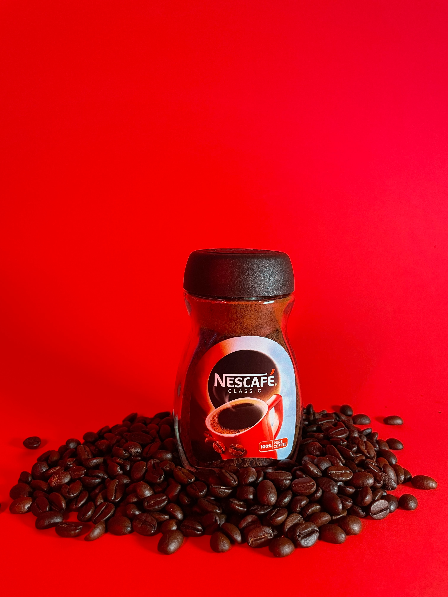
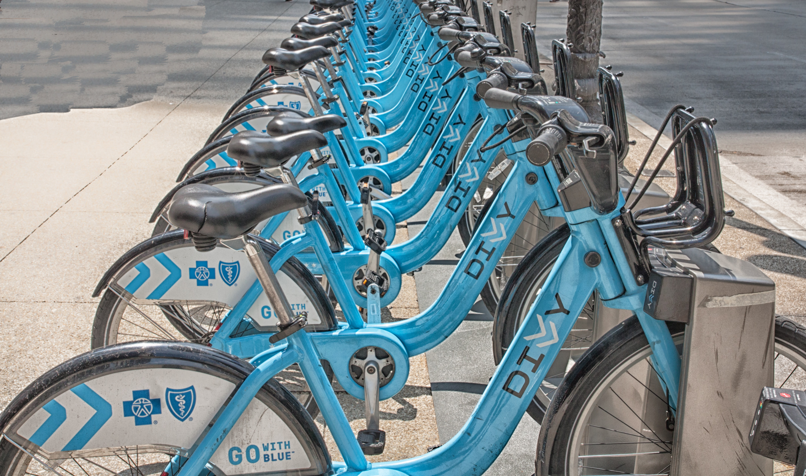
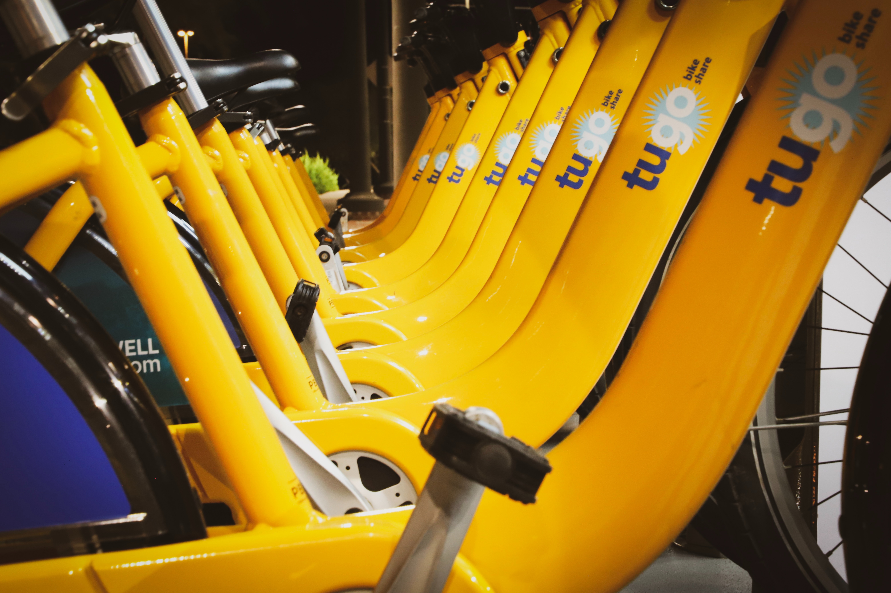

This was a Netflix Case Study showing an overview of movies and tv shows on Netflix using Tableau.
This gave insights about the distribution of movies and TV Shows on Netflix, Top 10 Genres, distribution
by country & Year and the number of Ratings. This was a unique Project for me because it helped
to give recommendations towards increasing the number of visits on Netflix.

YTSchools is an online Edtech that offers training on popular Business
Intelligence tools. As a data analyst I was required to extract some information about the courses, departments and teachers in the school from the database using SQL.

This is a small startup airline,
operating out of the Chicago, Illinois area in the United
States. The airline's management team has a strong airline
operations background. Many of their systems are
disparate and not connected. I found out
that the airline could not pull specific
aircraft details, such as route and seating capacity, from a
single report, but rather needed to open two or more files
and compare the information.I helped to analyze the data and
present key insights to drive the business growth and
position in the industry

Nestle is the largest food company in the world. I did an analysis on their sales and revenue from 2018 to 2020. This helped the company make a decision in its expansion plans.

Worked for Charity, Education for all and did various analysis to increase the number of donors,
increase the donation frequency of their donors and increase the value of donations in their database.

As a data analyst, i helped Dennis understand how his business
has performed over time using the orders, properties and products tables provided.

Worked with GOBIKES, a startup bike rental company in Nigeria, helped analyse their daily bike rental
records for 2 years. Found out factors affecting daily bike rentals and helped give recommendations which
helped improve bike rental by 50% in the next year.
As a data analyst, i used Excel to analyse various expenses done by an Organisation in quarter 4
and gave insights on where most revenue is used and how to make changes in the next quarter.

Worked with GOBIKES again, they just went into bike sales and wanted to know who their
potential bike buyers are and the customers who purchased their bikes. I helped
analyse this and gave recommendateions on who their target audience should be in their next sales campaign.